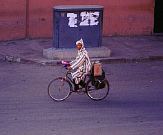
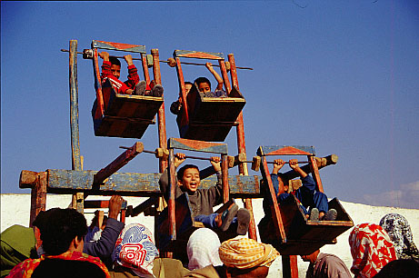
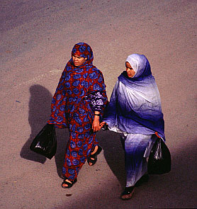
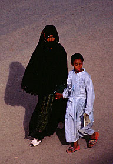

Ne caldiklarini merak ediyorsaniz resme tiklayin! /
Click on the photo to hear the musicians!

Kislik "celaba"siyla bir bisikletli /
A cyclist with his winter-"djellaba" (hooded cloak, burnouse)

Essauira'da bir donme-dolap / Fairground attraction in Essaouira
